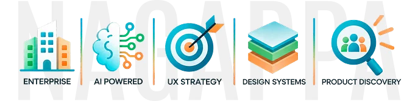
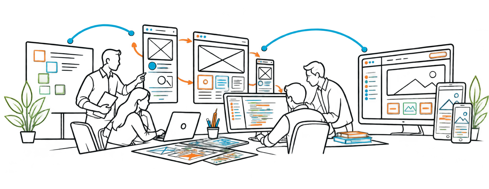
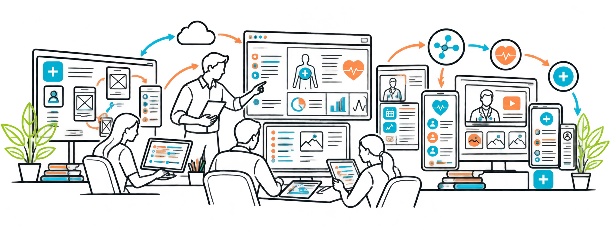
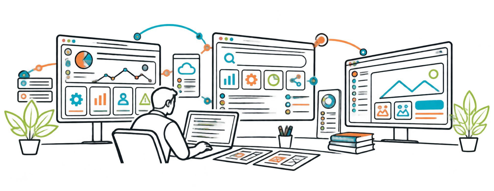
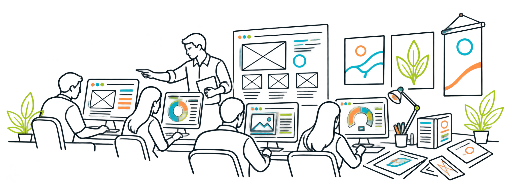

CASE STUDY
Time Off
Simplified leave policy configuration through structured workflows, reusable templates and AI-powered recommendations.
UX design from research to delivery, mentor designers, collaborate with cross-functional teams, build design systems and user friendly experiences.

Simplified leave policy configuration through structured workflows, reusable templates and AI-powered recommendations.
Exploring how UX moves beyond traditional screen-based workflows into adaptive AI-powered experiences.
Improved healthcare experiences by identifying usability issues, accessibility gaps and workflow improvements.
Through curiosity and learning, building reusable Figma components and consistent design patterns.
Working at the ADP client location in Hyderabad, I owned UX strategy and end-to-end design across enterprise HCM products, from discovery and research to information architecture, prototyping, usability validation and delivery.
Mentored and coached 2 junior UX designers across UX processes, interaction design, prototyping, usability and design quality.
AI-assisted implementation experience that simplified onboarding, reduced duplicate client interactions and accelerated module configuration.
Redesigned policy configuration workflows using structured information and recommendations to reduce implementation complexity and turnaround time.
UX strategy and user-centered workflows that supported the platform's growth from a 2-client pilot to 40+ enterprise clients.
Migration-focused dashboard and navigation redesign tailored to Admin, HR, Manager and Employee experiences.
Designed an enterprise file storage and collaboration experience that simplified file management, search, synchronization and sharing.
Rejoined Sagarsoft as a Senior Software UI Designer, contributing across product UI/UX, front-end development and visual design. Worked on Helios, a corporate insurance platform supporting organizations and employees with group insurance benefits and services. Partnered with Project Managers, Business Analysts and developers to translate requirements into user flows, wireframes, interaction designs and high-fidelity interfaces, while contributing to front-end implementation using HTML, CSS, JavaScript and React.
Corporate email templates | 25th Anniversary logo | Other UI and visual design initiatives

Designed corporate insurance experiences that simplified company onboarding, employee enrollment and claims workflows.
With Microsoft as a vendor
Worked as a Senior UI Consultant at Neudesic, delivering UI design and front-end solutions across enterprise projects for Singapore CPFB, BDO, World Bank, Maersk and Crown Nest. Projects covered government, finance, logistics and enterprise business domains, with a focus on translating business and technical requirements into clear, responsive and accessible user interfaces.
Collaborated with business, technical and development teams to create visual designs, interface layouts and front-end experiences using HTML, CSS, SCSS, JavaScript, Gulp JS and React JS, along with Bootstrap, Microsoft Fabric UI and Kendo UI. Contributed to both Microsoft-vendor projects and Neudesic's own projects, maintaining consistency, usability and implementation quality across enterprise applications.
Designed responsive government service experiences with accessible UI and reusable front-end components.
Designed consistent web and desktop interfaces with reusable components and efficient front-end implementation.
Designed a unified employee workspace for social collaboration, communication, email and calendar access.
Designed container visibility experiences that simplified tracking, movement and journey-status information.
Designed a reusable project reference experience to help teams estimate resources, effort, timelines and costs.
Worked as a UI Designer delivering healthcare digital applications for Novartis across web, mobile and tablet platforms, with a focus on creating clear, intuitive and user-friendly experiences for patients and healthcare professionals.
Translated business and functional requirements into user flows, wireframes and high-fidelity interface designs across different devices and screen sizes. Collaborated with project teams and developers to ensure consistent visual and interaction experiences across platforms, while also contributing to responsive front-end development using HTML, CSS, JavaScript and jQuery.

Designed oncology drug information experiences for medical representatives across web, tablet and mobile.
Worked as a Web Designer across projects in education, online directories and e-commerce, designing and developing websites and web interfaces based on business and client requirements.
Focused on creating visually engaging, user-friendly and well-structured web experiences, including information-rich directory platforms with search and category-based navigation. Translated requirements into page layouts, navigation structures and interactive web interfaces while contributing to front-end development using HTML, CSS and JavaScript.
Ensured cross-browser compatibility and consistent visual presentation across commonly used web browsers, while maintaining usability and implementation quality across client projects.

Designed and developed websites across education, e-commerce, directories and information domains.
Worked as a Lab Faculty and Graphic Designer, combining hands-on web and graphic design expertise with classroom and practical training responsibilities. Trained students in web design and graphic design fundamentals while also creating visual communication materials for the organization.
